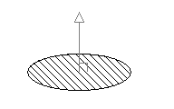

|
Normal Property |
Specifies the three-dimensional normal unit vector for the object.
Signature
object.Normal
object
Arc, Attribute, AttributeReference, BlockRef, Circle, Dim3PointAngular, DimAligned, DimAngular, DimArcLength, DimDiametric, DimOrdinate, DimRadial, DimRadialLarge, DimRotated, Ellipse, ExternalReference, Hatch, Leader, LightweightPolyline, Line, MInsertBlock, MText, Point, Polyline, Region, Section, Shape, Solid, Text, Tolerance, Trace
The objects this property applies to.
Normal
Variant (three-element array of doubles); read-write
A 3D normal unit vector in WCS.
Remarks
This normal vector defines the Z axis for the given object. Although the normal is returned in WCS, it can be used to determine the OCS for the object. Use this property as the OCSNormal in the TranslateCoordinates method when converting coordinates to and from OCS.

Note that this property specifies a vector, not a point. The vector defines the direction of the normal, not a location in space. You can add this normal vector to a point to obtain another point.
Tolerance: The normal vector must be perpendicular to the direction of the Tolerance object. A normal that is not perpendicular to the Tolerance object will generate an error.
| Comments? |